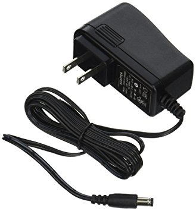

Robotic Arts Intro Fall 2018 (IA277.01)
- Instructor: Lucas Haroldsen (lharoldsen@mica.edu)
- Class Site: yasunaga.work/raif18
- syllabus: syllabus.pdf
- Resources: links.html
10/05: protyping process 1 idea meditation
Today is an idea exersizing workday for Project 1: the midterm
Schedule
- Presentation
- Arduino Review
- Tip and tricks on prototyping
- Individual meeting
Arduino Review
Take a look at what we have gone over so far if you need!
- Basic Component
- Digital Input and Output
- variables
- if else --video
- Analog Input, Serial Print, Threshold --video
- Analog output and tone()
Important resource
- Arduino Language Reference Page
- Arduino Playground
- Arduino Foundations Extended guide for learning arduino
- Adafruit Arduino Lessons Well documented 17 parts tutorials
Tips and Tricks
- Powering Arduino --- extensive article here

- Power Adapter: you can use cellphone chargers or computer chargers between 9V and 12V DC and rated for more than 250mA (2.1mm plug, center pin positive)
- Battery: battery pack with 2.1mm plug can be foun in the MICA store. You can use 9V battery to power arduino with 2.1mm plug or Vin pin
- Rechargeable Batteries: here or here
- Wiring and putting it together
- Carving PCB:
- Free form
- perforated board: Common electronic prototyping method. We have a bunch for the class

- Arduino and Coding
Technological trend and our senses
A Brief Rant On The Future of Interaction Design
Interview with Eric McLuhan on The Sensus Communis (faculty of senses)
19 senses described from Deciphering Your Senses by Robert Rivlin and Karen Gravelle
Doug Engelbart's presentation at the Fall Joint Computer Conference in San Francisco, December 9, 1968 titled "A Research Center for Augmenting Human Intellect."
From Applied Science by Ben Krasnow
Alexitimia by Paula Gaetano Adi
Bodies.html by Katie Rose Pipkin
Tangible Media Group - Haptic Edge Display
Chris Harrison - Dynamic Physical Buttons
HOMEWORK
Project 1: the midterm
Project 1 is due October 19th. See the details on this link here.
Next week, come up with a working prototype of your project. A working prototype does not have to look good. It's a mock up of your project in its simplest form so you can understand how it works. Don't be precious about this stage, pay attention to the limits and constraints you learn form your prototypes.
The first prototype can be a small scale version of your project. If your project has 10 switches, make it work with 2 or 3 switches first.
Reading
Chapter 1: What is poetic about computation?
from Poetic Computation by Taeyoon Choi